Diese Unterlagen werden nicht mehr weiter entwickelt, da die
Vorlesung ab 2020 mit neuem Konzept neu startet.
Endlich wieder Programmieren. 💻 An dieser Stelle kehren wir noch einmal
zu letztem Semester zurück und vertiefen die Entwicklung serverseitiger
Webanwendungen mit der Jakarta Enterprise Edition.
Lernziele dieser Einheit
Nach Abschluss dieser Einheit kannst du …
erklären, was die Jakarta Enterprise Edition¹
(kurz JEE) ist und wie sie mit Java zusammenhängt.
die wichtigsten, über eine einfache Middleware
hinausgehenden Dienste von Jakarta EE benennen.
aufzeigen, mit welchen Schnittstellentechnologien
Jakarta EE in eine IT-Landschaft integrieren werden kann.
die wichtigsten APIs zur Programmierung mit
der Jakarta Enterprise Edition aufzählen.
erklären, wie eine Java-Webanwendung nach Model-View-Controller
gegliedert werden kann.
eine minimale Webanwendung nach dem MVC-Prinzip programmieren.
die Vor- und Nachteile der verschiedenen Arten von Enterprise
Java Beans gegeneinander abwägen.
entscheiden, wann eine Enterprise Java Bean ein Local Interface,
ein Remote Interface oder keines davon benötigt.
¹ Früher hieß das Projekt „Java Enterprise Edition” und wurde von Oracle vorangetrieben.
Seit der Übergabe an die Eclipse Foundation im Jahr 2018 wurde es in „Jakarta Enterprise Edition” umbenannt.
Jeder Anwendungsserver besitzt dabei einen Webcontainer zur Bereitstellung von Webinhalten sowie eine
EJB-Container zur Ausführung der fachlichen Anwendungsklassen. Darüber hinaus bietet er viele eingebaute
Zusatzfunktionen:
Verschiedene Arten der Benutzerverwaltung (Datenbankbasiert, LDAP, …)
Die Möglichkeit, Nachrichten an einen Message Broker zu senden
Eine API zum Versand von E-Mails
Einen Timer zur Einplanung von Hintergrundaktivitäten
Und noch vieles, vieles mehr 🌠
Aufbau eines Applikationsservers
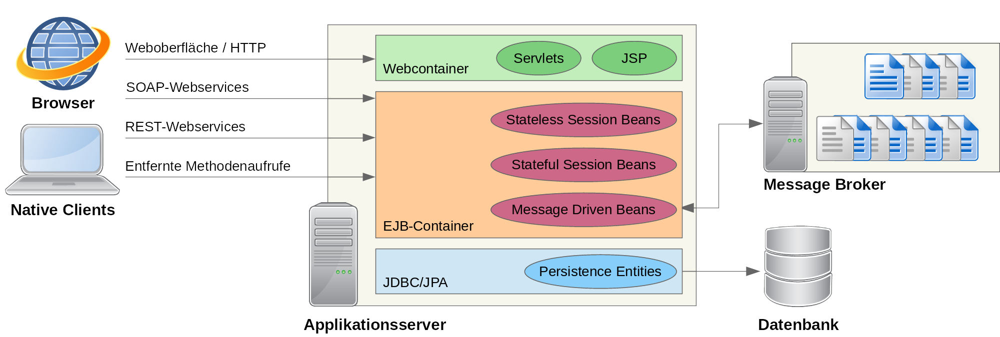
Webprogrammierung
Servlets
Grundlegende Klassenbibliothek zur Reaktion auf HTTP-Anfragen. Es handelt sich dabei um
die Basistechnologie, die allen höheren Webframeworks für Jakarta EE zugrunde liegt.
Java Server Pages
Serverseitige Erweiterung von HTML. Erlaubt es, den HTML-Code dynamisch auf dem Server
zu erzeugen, bevor er an den Browser geschickt wird.
Java Server Faces
Von Oracle entwickeltes, mit Jakarta EE ausgeliefertes Webframework. Nutzt eine an HTML
angelehnte Beschreibungssprache zur Definition des Layouts.
Anwendungslogik
Enterprise Java Beans
Spezielle Laufzeitumgebung für die fachlichen Klassen einer Anwendung. Sie ermöglichen es,
Services zu definieren, die von lokalen und entfernten Clients genutzt werden können.
Java Database Connection
Allgemeine Klassenbibliothek für den Zugriff auf SQL-Datenbanken. Sie bildet die Grundlage
für JPA und JTA und wird heutzutage selten direkt genutzt.
Java Persistence API
O/R-Mapper zur Vereinfachung des Datenbankzugriffes. Die Felder einer Tabelle werden
automatisch auf die Attribute einer Java-Bean gemappt.
Java Transaction API
Framework für von der Datenbank unabhängige, verteilte Transaktionen.
Schnittstellen
Java API for XML-Webservices
Klassenbibliothek zum Erstellen und Aufrufen von SOAP-Webservices.
Java API for REST-Webservices
Klassenbibliothek zum Erstellen und Aufrufen von REST-Webservices.
Java Message Services
Klassenbibliothek für den Zugriff auf einen Message Broker.
Java Mail API
Hilfsklassen zum Versenden von E-Mails.
Sonstiges
Java Authentication & Authorization Service
Rollenbasierte Benutzer- und Berechtigungsverwaltung. Erlaubt es, die Benutzer entweder in einer
Datenbanktabelle abzulegen oder auf externe Provider, wie zum Beispiel LDAP-Verzeichnisse,
zuzugreifen.
Im Unternehmensumfeld geht es häufig darum, mit unterschiedlichen Endgeräten eine gemeinsame Datenbasis zur
Dokumentation aller Geschäftsvorgänge zu pflegen. Anwendungen wie diese besitzen daher ein ausgefeiltes Datenmodell
und darauf aufbauend sehr viele Services, welche die Geschäftsprozesse des Unternehmens abbilden. Das Datenmodell
wird dabei durch die Persistence Entity-Klassen modelliert, während die Services in Enterprise Java Beans
enthalten sind. Fremde Clientprogramme können die EJBs über Rechnergrenzen hinweg direkt aufrufen. Innerhalb des
Applikationsservers stehen sie aber auch zur Nutzung in Webanwendungen zur Verfügung.
Dieses Beispiel zeigt ein großes Webportal mit mehreren, von der restlichen Anwendungslogik entkoppelten Webfrontends.
Zur besseren Skalierung werden getrennte Server für die Webfrontends (sog. „Webcontainer"¹) und das Backend genutzt.
Im Backend werden zusätzlich die Dienste fremder Anbieter per Webservice integriert.
¹ Vollwertige Jakarta EE-Applikationsserver bestehen im Grunde genommen aus nichts anderem als einem
Webcontainer und einem EJB-Container, wobei der Webcontainer die Servlet- und webbezogenen APIs zur
Verfügung stellt und der EJB-Container den Rest. Wenn man aber weiß, dass man die Funktionen des EJB-Containers
nicht benötigt, kann man den Webcontainer auch separat installieren.
Schauen wir uns an, wie Model, View und Controller beim Aufruf einer Webseite zusammenarbeiten.
Hierfür gibt der Anwender eine URL ein und schickt die Anfrage ab.
Anhand der URL ermittelt der Server ein Servlet, das die Anfrage bearbeitet.
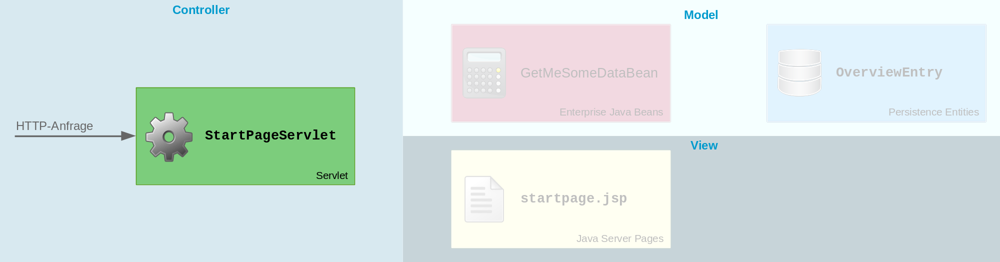
Da das Servlet keine fachliche Logik enthalten darf, ruft es eine oder mehrere Enterprise Java Beans auf,
die die eigentliche Arbeit erledigen.
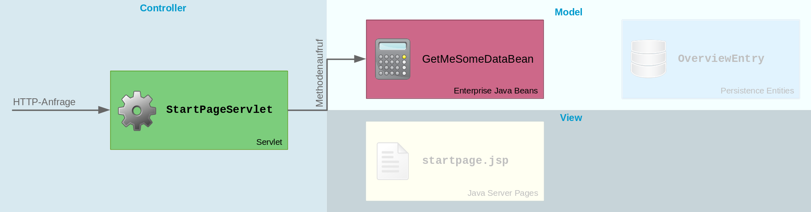
Die Enterprise Java Beans wiederum nutzen Persistence Entities, um Daten aus der Datenbank zu
lesen oder zu schreiben.
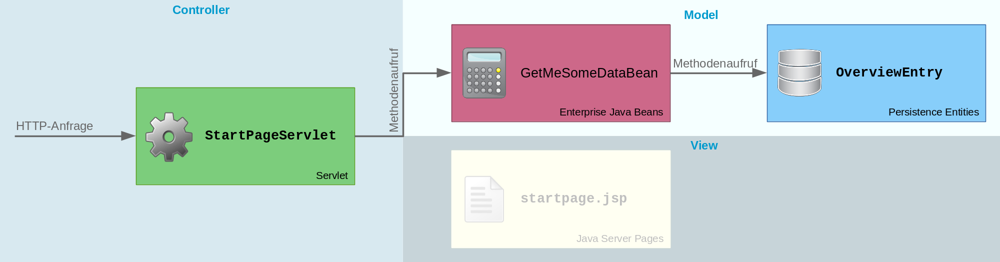
Das Servlet legt die eben erhaltenen Daten im Request Context ab und leitet die Anfrage
an eine Java Server Page weiter.
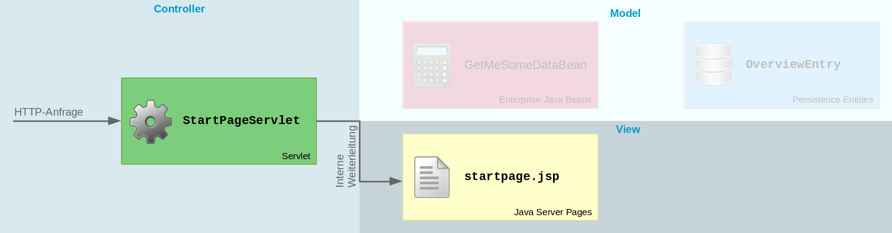
Die Java Server Page wiederum generiert den HTML-Code, der an den Browser geschickt wird.
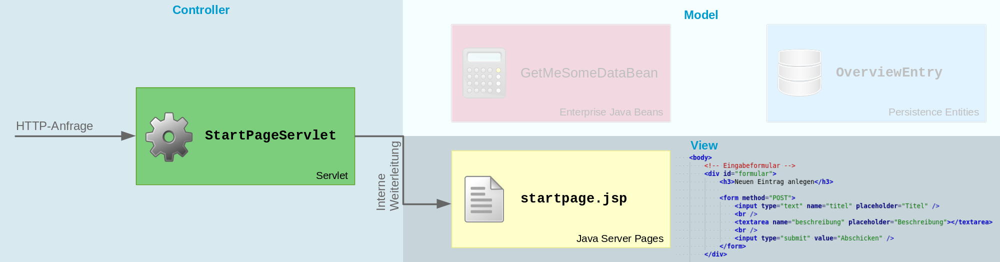
Der Browser zeigt die empfangene Seite an und der Anwender freut sich. 😊
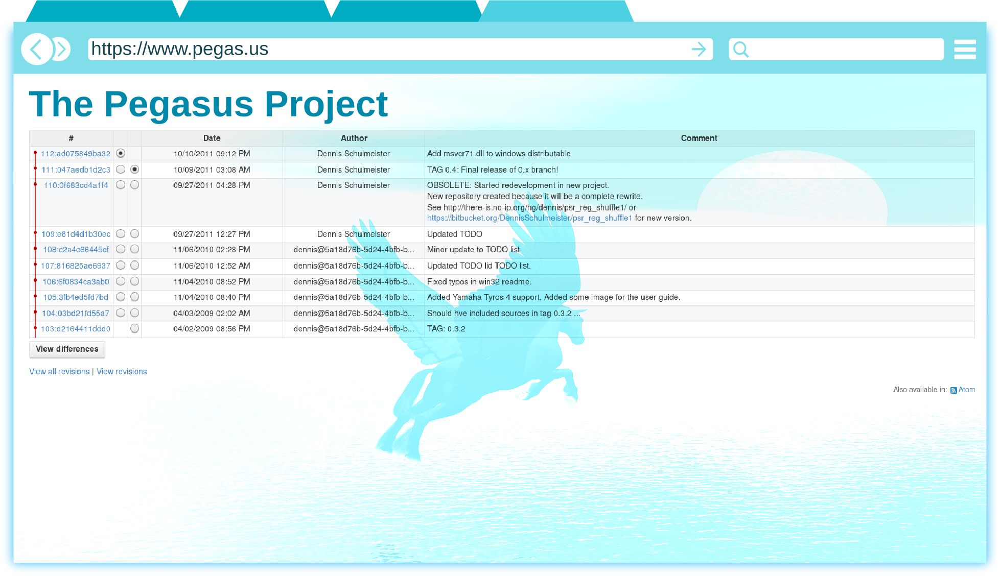
Auf der nächsten Folie zeigen wir dir, wie der Quellcode hierfür aussehen muss. ⌨️
So sieht das Netbeans-Projekt aus. Wir bauen ein kleines Gästebuch.
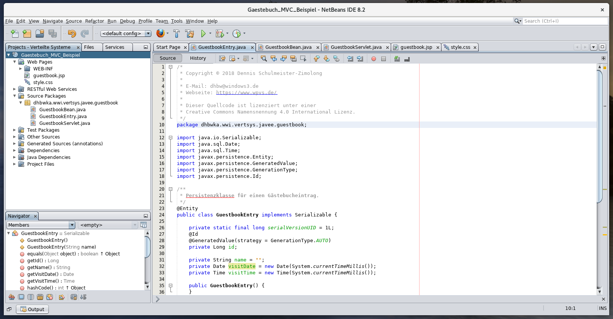
Diese Persistence Entity entspricht einem Eintrag in der Datenbank.
package dhbwka.wwi.vertsys.javee.guestbook;
import java.io.Serializable;
import java.sql.Date;
import java.sql.Time;
import javax.persistence.Entity;
import javax.persistence.GeneratedValue;
import javax.persistence.GenerationType;
import javax.persistence.Id;
/**
* Persistenzklasse für einen Gästebucheintrag.
*/
@Entity
public class GuestbookEntry implements Serializable {
private static final long serialVersionUID = 1L;
@Id
@GeneratedValue(strategy = GenerationType.AUTO)
private Long id;
private String name = "";
private Date visitDate = new Date(System.currentTimeMillis());
private Time visitTime = new Time(System.currentTimeMillis());
public GuestbookEntry() {
}
public GuestbookEntry(String name) {
this.name = name;
}
//<editor-fold defaultstate="collapsed" desc="Setter und Getter">
public Long getId() {
return id;
}
public void setId(Long id) {
this.id = id;
}
public String getName() {
return name;
}
public void setName(String name) {
this.name = name;
}
public Date getVisitDate() {
return visitDate;
}
public void setVisitDate(Date visitDate) {
this.visitDate = visitDate;
}
public Time getVisitTime() {
return visitTime;
}
public void setVisitTime(Time visitTime) {
this.visitTime = visitTime;
}
//</editor-fold>
}
Dies ist eine Enterprise Java Bean. Sie enthält die Methoden zum Lesen und Schreiben der Einträge.
package dhbwka.wwi.vertsys.javee.guestbook;
import java.util.List;
import javax.ejb.Stateless;
import javax.persistence.EntityManager;
import javax.persistence.PersistenceContext;
/**
* Enterprise Java Bean zum Auslesen und Speichern von Gästebucheinträgen.
*/
@Stateless
public class GuestbookBean {
@PersistenceContext
protected EntityManager em;
/**
* @return Liste mit allen Gästebucheinträgen
*/
public List<GuestbookEntry> findAllEntries() {
return em.createQuery("SELECT e FROM GuestbookEntry e "
+ " ORDER BY e.visitDate DESC, "
+ " e.visitTime DESC")
.getResultList();
}
/**
* Speichert einen neuen Gästebucheintrag.
* @param name Name des Besuchers
* @return Der gespeicherte Eintrag
*/
public GuestbookEntry createNewEntry(String name) {
GuestbookEntry entry = new GuestbookEntry(name);
em.persist(entry);
return em.merge(entry);
}
}
Dies ist das Servlet, das bei jeder GET- und POST-Anfrage durchlaufen wird.
package dhbwka.wwi.vertsys.javee.guestbook;
import java.io.IOException;
import java.util.List;
import javax.ejb.EJB;
import javax.servlet.ServletException;
import javax.servlet.annotation.WebServlet;
import javax.servlet.http.HttpServlet;
import javax.servlet.http.HttpServletRequest;
import javax.servlet.http.HttpServletResponse;
import javax.servlet.http.HttpSession;
/**
* Servlet für die Gästebuchseite
*/
@WebServlet(urlPatterns = {"/index.html"})
public class GuestbookServlet extends HttpServlet {
@EJB
private GuestbookBean guestbookBean;
@Override
public void doGet(HttpServletRequest request, HttpServletResponse response)
throws ServletException, IOException {
// Alle vorhandenen Einträge aus der Datenbank lesen und im Request
// Context ablegen, damit sie in der JSP zur Verfügung stehen
List<GuestbookEntry> entries = this.guestbookBean.findAllEntries();
request.setAttribute("entries", entries);
// Anfrage an die JSP weiterleiten
request.getRequestDispatcher("guestbook.jsp").forward(request, response);
// In der Session liegende Fehlermeldung verwerfen, damit wir beim
// nächsten Aufruf wieder mit einem leeren Eingabefeld anfangen
HttpSession session = request.getSession();
session.removeAttribute("fehler");
session.removeAttribute("name");
}
@Override
public void doPost(HttpServletRequest request, HttpServletResponse response)
throws ServletException, IOException {
// Prüfen, ob der Anwender seinen Namen eingegeben hat
HttpSession session = request.getSession();
String fehler = "";
String name = request.getParameter("name");
if (name == null || name.trim().isEmpty()) {
fehler = "Bitte gib erst deinen Namen ein.";
session.setAttribute("fehler", fehler);
session.setAttribute("name", name);
}
// Neuen Eintrag speichern
if (fehler.isEmpty()) {
this.guestbookBean.createNewEntry(name);
}
// Browser auffordern, die Seite neuzuladen
response.sendRedirect(request.getContextPath());
}
}
Hier die Datei WEB-INF/guestbook.jsp mit dem JSP-Code zur Anzeige der Seite.
Starte Netbeans und wähle im File-Menü New Project… aus.
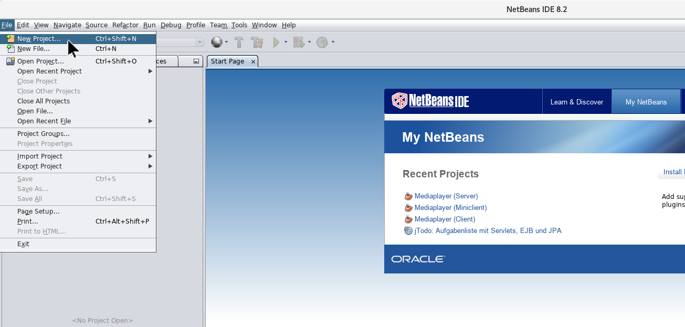
Als Projekttyp solltest du Web Application in der Kategorie Maven nehmen.
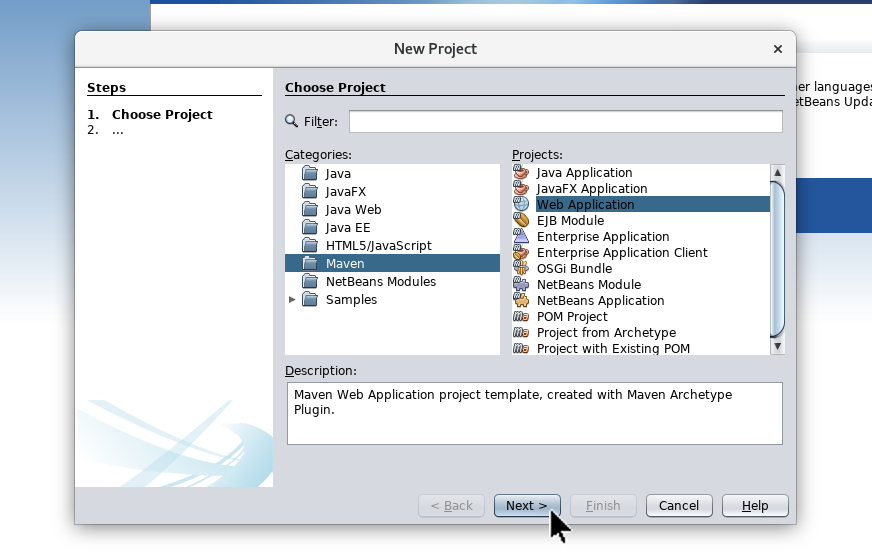
Gib im nächsten Schritt den Namen des Projekts ein und ändere ggf. die Project Location
und das Package.
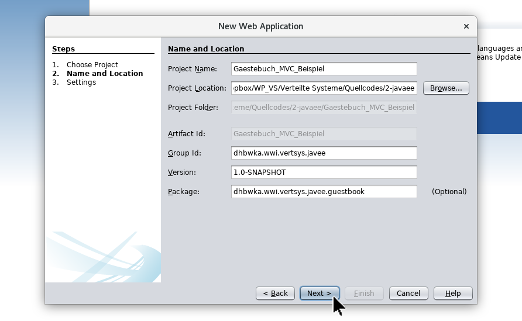
Die Einträge im letzten Schritt sollten bereits richtig sein. Du kannst das Projekt daher nun anlegen.
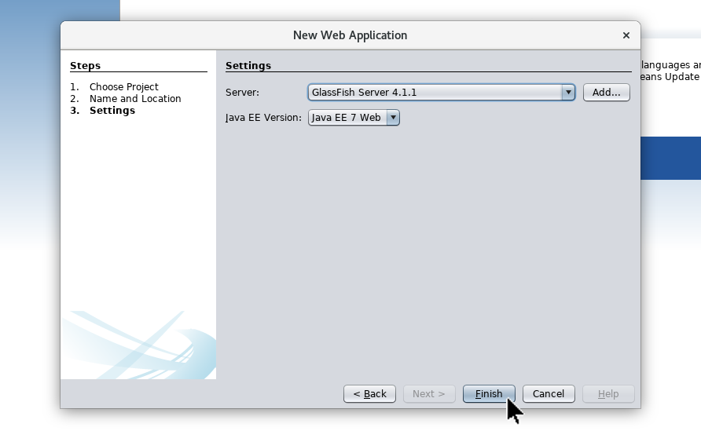
Die Datei index.html solltest du löschen. Wir ersetzen sie durch ein Servlet und eine JSP.
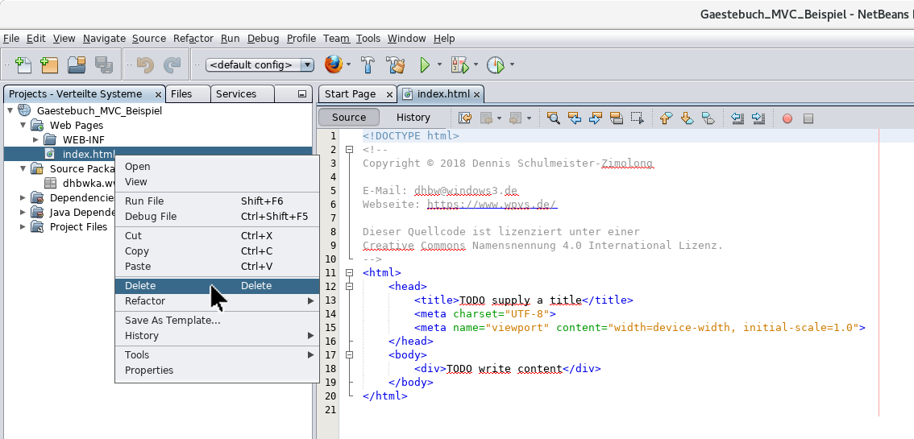
Doch zunächst legen wir eine Persistence Entity an. In Netbeans heißt der Eintrag Entity Class….
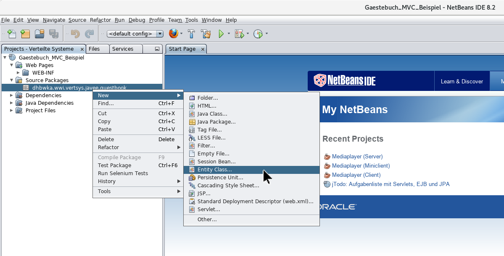
Nenne die neue Klasse GuestbookEntry und gehe weiter.
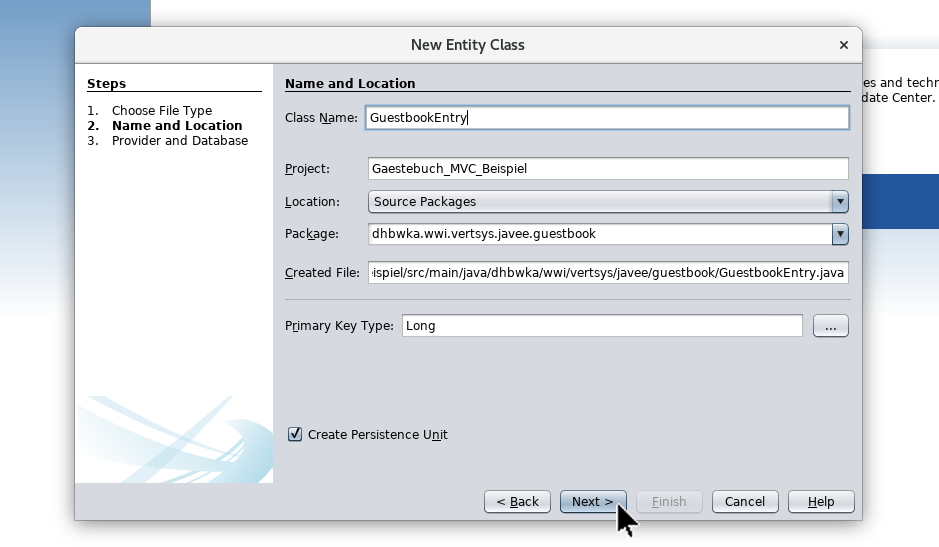
An dieser Stelle kannst du alles so lassen, wie es ist. Wir konfigurieren
die Datenbankverbindung im nächsten Schritt manuell.
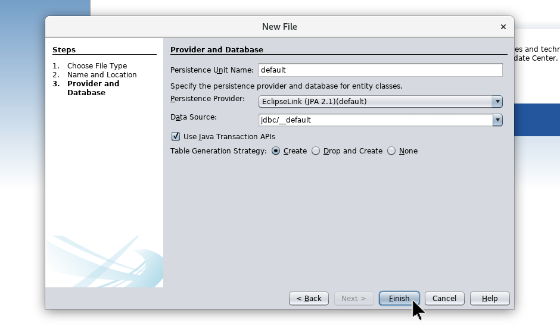
Öffne die Datei persistence.xml im Ordner Other Sources → src/main/resources
und tausche sie durch folgendes XML aus. Dadurch weiß die Anwendung, wie sie auf die Datenbank zugreifen kann.
Nicht zwingend notwendig aber empfohlen ist, im gleichen Ordner noch eine Datei namens orm.xml
mit folgendem Inhalt anzulegen. Dadurch werden Konflikte mit anderen Anwendungen in der Datenbank vermieden.
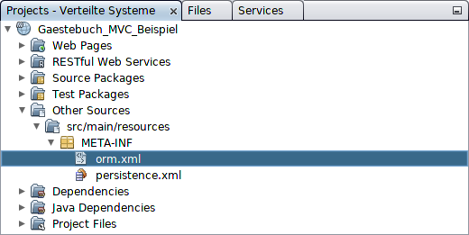
<?xml version="1.0" encoding="UTF-8"?>
<entity-mappings xmlns="http://java.sun.com/xml/ns/persistence/orm"
xmlns:xsi="http://www.w3.org/2001/XMLSchema-instance"
xsi:schemaLocation="http://java.sun.com/xml/ns/persistence/orm http://java.sun.com/xml/ns/persistence/orm_1_0.xsd"
version="1.0">
<persistence-unit-metadata>
<persistence-unit-defaults>
<!-- Dieser Wert muss für jede Anwendung ein anderer sein! -->
<schema>GAESTEBUCH_MVC_BEISPIEL</schema>
</persistence-unit-defaults>
</persistence-unit-metadata>
</entity-mappings>
Den Quellcode kannst du aus der vorherigen Folie kopieren.
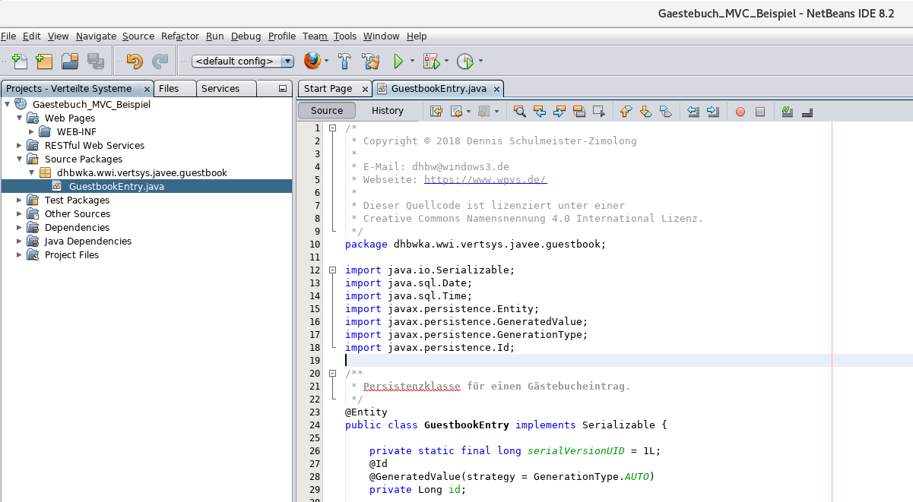
Weiter geht es mit der Enterprise Java Bean. Hierfür legst du am besten einfach eine leere Klasse an.
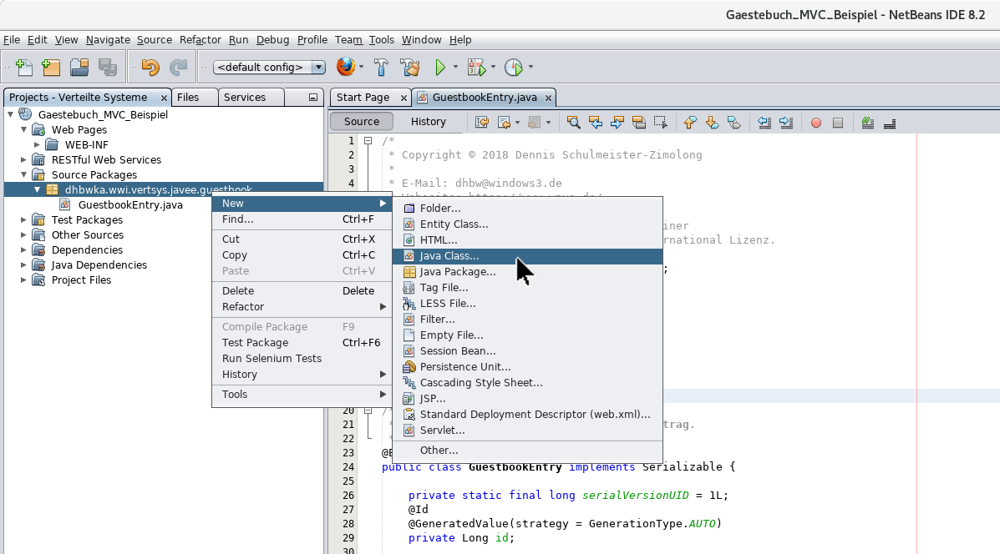
Nenne die Klasse GuestbookBean und bestätige das Fenster.
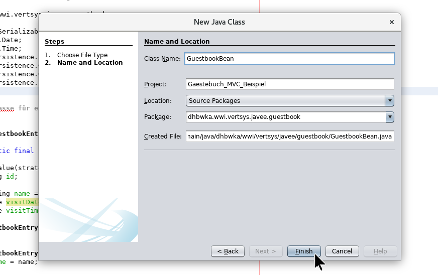
Auch hier kannst du den Quellcode aus der vorherigen Folie kopieren.
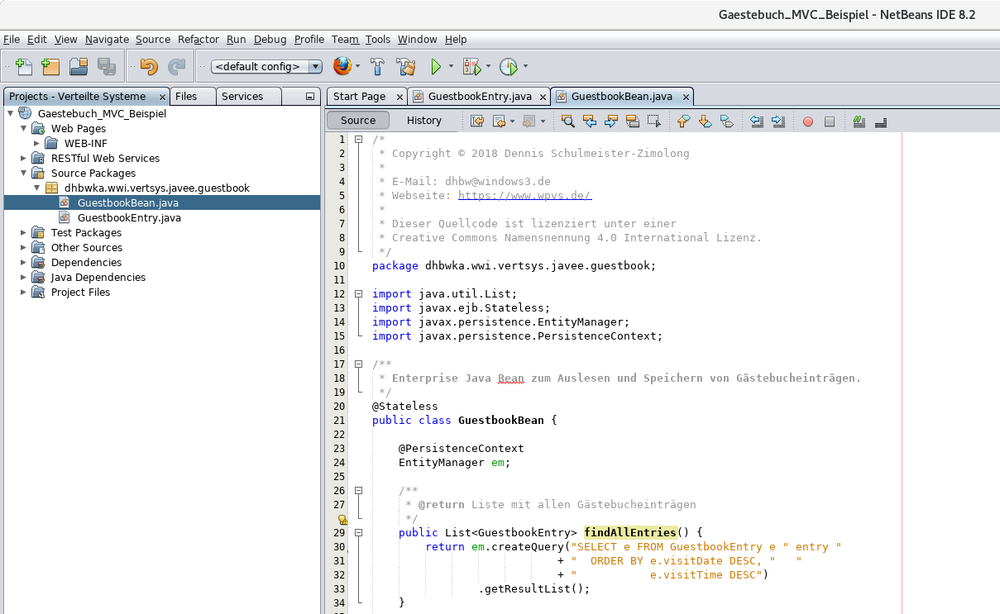
Weiter geht es mit dem Servlet. Lege auch hierfür eine Empty Class… anstelle eines Servlet… an.
Denn sonst generiert Netbeans viel zu viel unnötigen Quellcode!
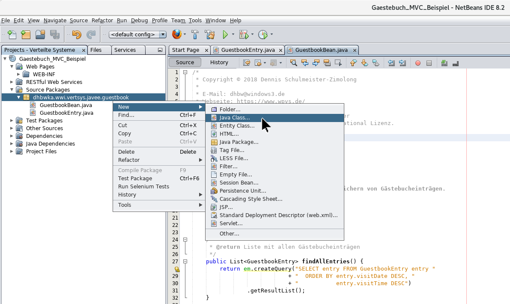
Die Klasse heißt (Trommelwirbel bitte 🥁): GuestbookServlet.
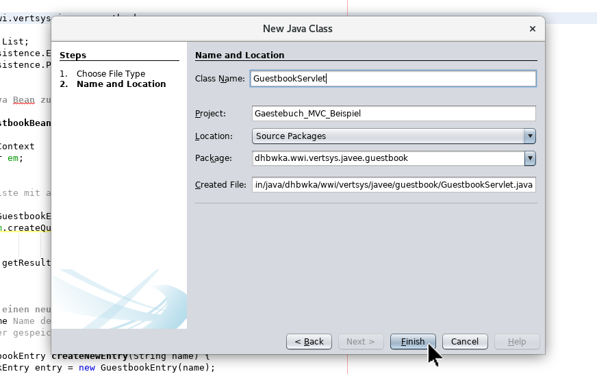
Nun kommt die Java Server Page.
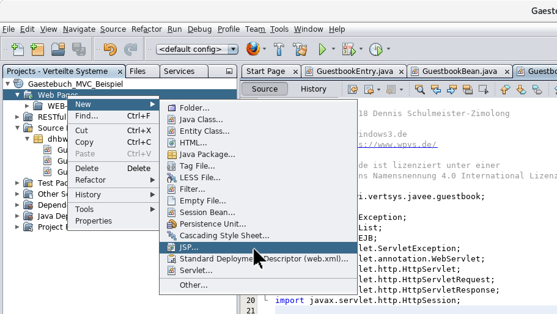
Sie heißt einfach nur guestbook. Die Dateiendung ergänzt Netbeans von alleine.
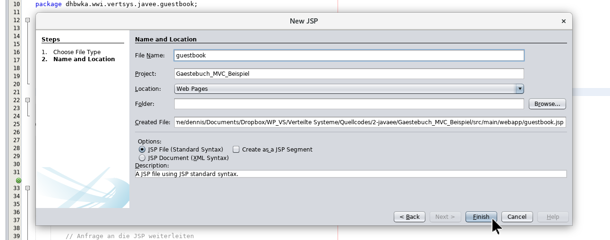
Das Stylesheet kannst du in eine neue, leere Datei mit dem Namen style.css kopieren.
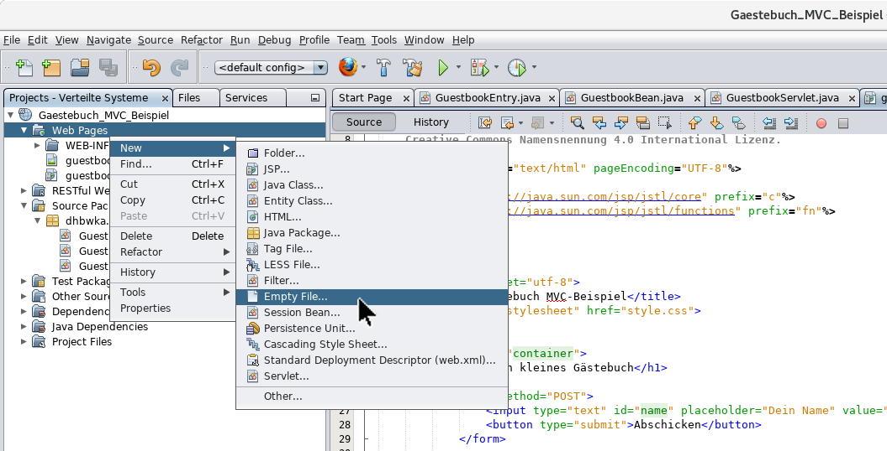
Nun solltest du die Anwendung über das grüne Play-Symbol
▶️ starten können.
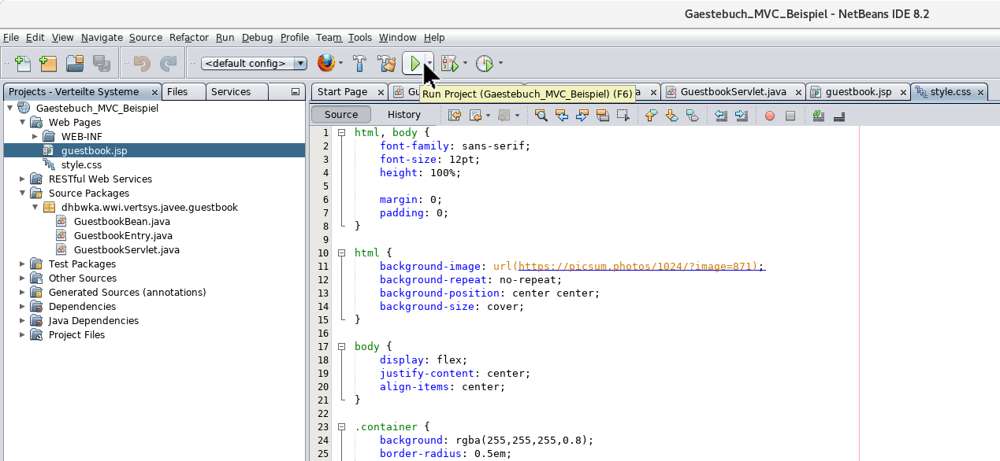
Wenn alles gut geht, sollte der Browser dann folgendes Bild anzeigen.
Das war's auch schon.
Zwar waren das jetzt schon einige Schritte.
Dafür ist das Projekt von Anfang an sauber gegliedert.
🧽🛀🧹✨
Doch Vorsicht! Der Client einer Bean ist immer nur ihr direkter Verwender.
Gerade bei Stateful Session Beans macht das
einen Unterschied, wie die folgende Abbildung zeigt. @Stateful alleine
reicht nicht aus, um eine Bean einem einzelnen Besucher einer Webseite zuzuordnen.
Hierfür muss die Bean manuell erzeugt und in der Session abgelegt werden.
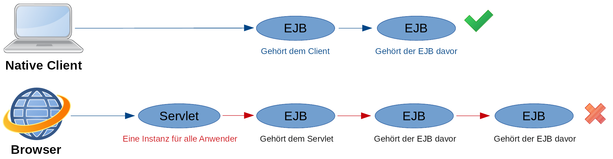
Nur für Zuhause: EJBs mit No-Interface View
So haben unsere Enterprise Java Beans bisher ausgesehen:
@Stateless
public class ArticleInformationBean {
public Article findArticle(long id) { … }
public List<Article> searchArticles(String search) { … }
…
}
🔰
Sie besitzen kein Interface und erben von keiner Klasse.
🔰
Sie sind deshalb nicht wirklich austauschbar.
🔰
Sie können nicht über Rechnergrenzen hinweg aufgerufen werden.
🔰
Auch nicht aus anderen Webanwendungen desselben Servers heraus.
🔰
Sie existieren lediglich innerhalb der eigenen Webanwendung.
☺️
Und das ist völlig okay so!
Wann braucht man ein Business Interface?
🐦
Soll eine EJB austauschbar sein, müssen ihre Methoden in einem Business Interface deklariert werden.
🐦
Das Interface kann dabei ein Local Interface oder ein Remote Interface sein.
🐦
Die Verwender der Bean dürfen sich dann nur auf das Interface und niemals auf die Klasse beziehen.
Ein Local Interface definiert Methoden, die innerhalb derselben JVM aufrufbar sind.
Der Aufrufer kann dabei auch Teil einer anderen Anwendung sein, solange sie im selben Server
in derselben JVM läuft.
/**
* Deklaration der verfügbaren Business Methoden als Local Interface
*/
@Local
public interface Payment {
List<String> getSupportedPaymentMethods();
PaymentResult payDueAmount(String method, double amount);
}
/**
* Erste Version unseres Bezahldienstes
*/
@Stateless
public class PaymentBeanV1 implements Payment {
List<String> getSupportedPaymentMethods() { … }
PaymentResult payDueAmount(String method, double amount) { … }
}
/**
* Verwendung des Dienstes innerhalb einer anderen EJB
*/
@Stateless
public class ShoppingCartBean {
// Hier nur das Interface angeben!
@EJB
private Payment payment;
…
}
Ein Remote Interface definiert Methoden, die auch über JVM- und Rechnergrenzen hinweg aufrufbar sind.
Dies wird heutzutage zugunsten von Webservices aber nur noch selten gemacht.
/**
* Deklaration der entfernt aufrufbaren Business Methoden als Remote Interface
*/
@Remote
public interface MovieSearch {
List<Movie> searchMovies(String search);
}
/**
* Implementierende Enterprise Java Bean
*/
@Stateless
public class MovieSearchBean implements MovieSearch {
List<Movie> searchMovies(String search) { … }
}
/**
* Verwendung der Bean in einem Servlet
*/
@WebServlet(urlPatterns={"/search/"})
public class MovieSearchServlet extends HttpServlet {
// Hier nur das Interface angeben
@EJB
private MovieSearch search;
…
}
Gibt es mehrere Implementierungen zum selben Interface, müssen diese über einen zusätzlichen Namen
auseinander gehalten werden. Der Name muss innerhalb der gesamten Anwendung eindeutig sein und
darf nur für eine EJB-Klasse verwendet werden.
/**
* Ein einfaches Business Interface
*/
@Local
public interface ReadProductData {
public Map<String, String> getProductData(long articleId);
}
/**
* Besondere Implementierung für Administratoren
*/
@Stateless(name="ReadProductData-Admin")
public class ReadProductDataAdminBean implements ReadProductData {
public Map<String, String> getProductData(long articleId) { … }
}
/**
* Einfache Version für normale Anwender
*/
@Stateless(name="ReadProductData-SimpleUser")
public class ReadProductDataSimpleUserBean implements ReadProductData {
public Map<String, String> getProductData(long articleId) { … }
}
/**
* Verwendung der Version für Administratoren
*/
@WebServlet(urlPatterns={"/admin/product/*"})
public class UserProfileAdminServlet extends HttpServlet {
// Interface plus der richtige Name
@EJB(beanName="ReadProductData-Admin")
private ReadProductData readProductData;
…
}
Woher kommen eigentlich die EJB-Objekte?
Woher kommen die EJB-Objekte!?
Die Variablen müssten doch leer sein.
Ist es Zauberei?
Natürlich ist es keine Zauberei. 👻
Das Prinzip, dass alle mit @EJB ausgezeichneten Variablen automatisch mit Inhalten versorgt werden,
nennt sich Dependency Injection. Es handelt sich dabei um eine Anwendung von Inversion of Control bzw. dem
Hollywood-Prinzip. Um zu verstehen, was hier passiert, musst du den Lebenszyklus von Enterprise Java Beans kennen:
@Stateful
public class GenieTheGhostBean {
@EJB
private MagicLampBean lamp;
public GenieTheGhostBean {
// Konstruktor: Hier ist this.lamp noch null!
}
@PostConstruct
public void onInit() {
// Ersatz für den Konstruktor: Hier ist this.lamp gefüllt!
}
@PreDestroy
public void onDestroy() {
// Die Bean wird gleich verworfen
}
public void placeFirstWish(String wish) {
// Normale Business Methode
}
public void placeSecondWish(String wish) {
// Normale Business Methode
}
@Remove
public void placeThirdWish(String wish) {
// Nachdem der Client diese Methode aufgerufen hat, verschwindet die Bean.
// @Remove ist daher nur in Stateful Session Beans erlaubt.
}
@Remove
public void leaveMeAlone() {
// Bewirkt ebenfalls, dass die Bean verschwindet.
}
}